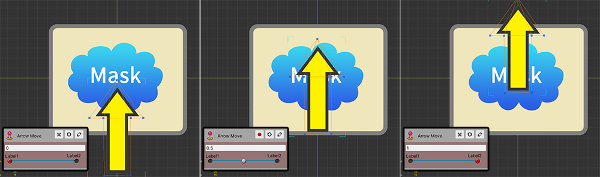
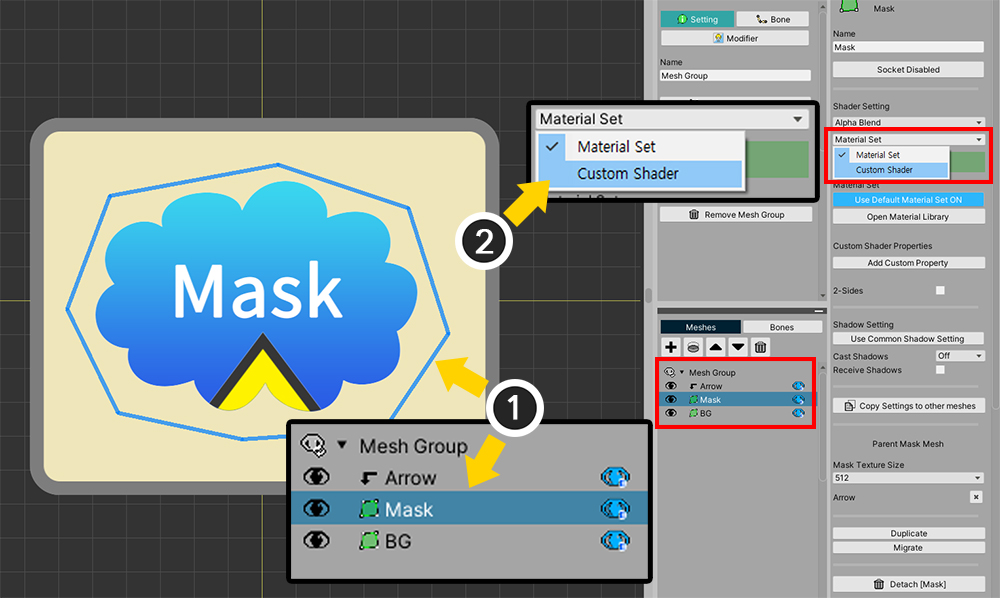
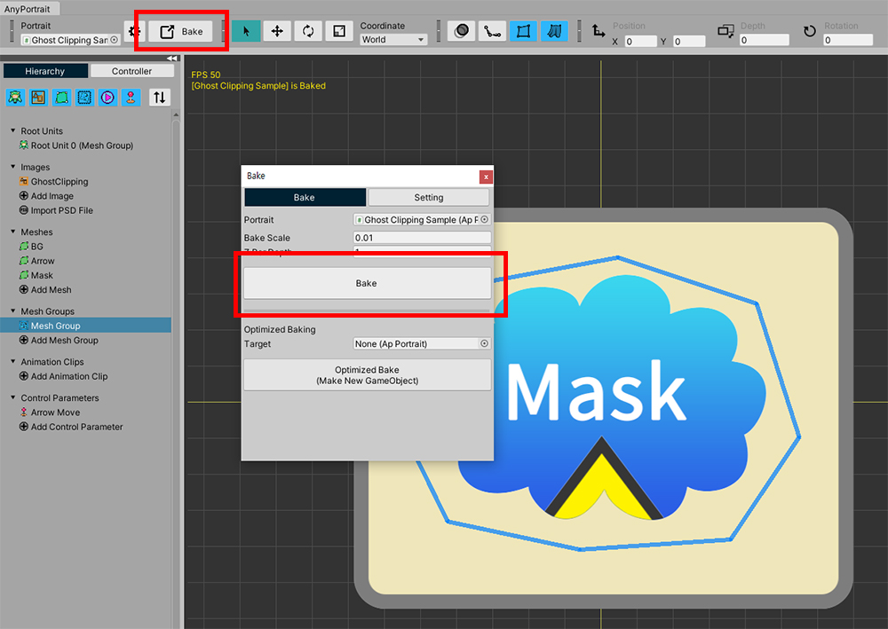

AnyPortrait > マニュアル > カスタムクリッピングマスク
カスタムクリッピングマスク
「クリッピングマスク（Clipping Mask）」を使用すると、メッシュの一部のみをレンダリングするようにすることができます。
この機能は、便利ですが、場合によっては他の方法で活用する必要があります。
クリッピングマスクを処理するシェーダー（Shader）を直接作成して、既存とは異なるマスキングをするように作成するプロセスをこのページで説明します。
- クリッピングマスクの説明
- メッシュのシェーダを変更する方法
- カスタムシェーダーを作成する方法
透明マスクの作成
「クリッピングマスク」の特徴は、マスクがレンダリングされると同時に、クリッピング、レンダリングが実行されることです。
従来の方式とは異なり、「マスクメッシュが隠された状態」にクリッピングレンダリングになるように作られてみましょう。

説明のために上記のようなサンプルを作ってみました。
「制御パラメータ」に応じて「矢印（Arrow）メッシュ」が上下に移動します。
このサンプルでは、「矢印メッシュ（Arrow）」、「マスクメッシュ（Mask）」、そして「背景メッシュ（BG）」が存在します。

「クリッピングマスク」を設定してみましょう。
(1) メッシュグループを選択した状態で、「Settingタブ」を選択します。
(2) 「矢印メッシュ（Arrow）」を選択します。
(3) 「クリッピングボタン」を押すと、
(4) 「マスクメッシュ（Mask）」を基準にクリッピングがされて表示されるのを見ることができます。

「Bake」をして、ゲームを実行してみると、上記のように「矢印メッシュ」が「マスクメッシュ」の内部で動くように見えます。
ここまではクリッピングメッシュの基本的な使い方です。
「カスタムシェーダー」を作成して、「マスクメッシュが隠された状態」に「矢印メッシュ」が表示されるようにしましょう。
新しい「シェーダーアセット」を作成し、以下のようにコードを記述します。
もし「シェーダーグラフ（Shader Graph）」を利用すれば、下の説明をご覧になり、同じように動作するようにグラフを作成します。
「カスタムシェーダーコードの記述方式」は、「関連ページ」でご覧いただけます。
Shader "Custom/Ghost Clipping Shader"
{
Properties
{
_Color("2X Color (RGBA Mul)", Color) = (0.5, 0.5, 0.5, 1.0)
_MainTex("Main Texture (RGBA)", 2D) = "white" {}
}
SubShader
{
Tags{ "RenderType" = "Transparent" "Queue" = "Transparent" "PreviewType" = "Plane" }
Blend SrcAlpha OneMinusSrcAlpha
LOD 200
CGPROGRAM
#pragma surface surf SimpleColor alpha
#pragma target 3.0
half4 LightingSimpleColor(SurfaceOutput s, half3 lightDir, half atten)
{
half4 c;
c.rgb = s.Albedo;
c.a = s.Alpha;
return c;
}
half4 _Color;
sampler2D _MainTex;
struct Input
{
float2 uv_MainTex;
float4 color : COLOR;
};
void surf(Input IN, inout SurfaceOutput o)
{
o.Alpha = 0;
o.Albedo = half3(0, 0, 0);
}
ENDCG
}
}
「シェーダーコード」を見ると、基本的な「Alpha Blend方式のシェーダー」とほぼ同じです。
ただし、「surf」関数内のコードが変更されました。
コードからわかるように、「Alpha」の値を「0」に設定したため、このコードは、メッシュをレンダリングしていません。
（シェーダーの名前は自由に指定ください。）
これで、このシェーダーを適用してみましょう。

「メッシュグループ」の「Settingタブ」を選択した状態では、
(1) 「マスクメッシュ（Mask）」を選択します。
(2) 「シェーダの設定」を「Material Set」から「Custom Shader」に変更します。

(1) 「カスタムシェーダーアセット」の項目にの上に作成した (2) 「シェーダーアセット」を割り当てます。

「カスタムシェーダー」はAnyPortraitエディタでは適用されません。
Unityシーンで見るために、Bakeを実行します。

ゲームを実行すると、上記のように、「マスクメッシュ」は、隠された状態で「矢印メッシュ」がマスクの影響を受けてレンダリングされることを見ることができます。
マスク領域を反転
現在「矢印メッシュ」は、マスクの領域の内側でのみ表示されます。
カスタムシェーダーを利用すれば、マスクの領域外でのみ表示されるようすることができます。
新しい「シェーダーアセット」を作成し、以下のように作成してみましょう。
「クリッピングシェーダー」の作成要領は、「関連ページ」で見ることができます。
Shader "Custom/Invert Clipped Shader"
{
Properties
{
_Color("2X Color (RGBA Mul)", Color) = (0.5, 0.5, 0.5, 1.0)
_MainTex("Base Texture (RGBA)", 2D) = "white" {}
_MaskTex("Mask Texture (A)", 2D) = "white" {}
_MaskScreenSpaceOffset("Mask Screen Space Offset (XY_Scale)", Vector) = (0, 0, 0, 1)
}
SubShader
{
Tags{ "RenderType" = "Transparent" "Queue" = "Transparent" "PreviewType" = "Plane"}
Blend SrcAlpha OneMinusSrcAlpha
LOD 200
CGPROGRAM
#pragma surface surf SimpleColor alpha
#pragma target 3.0
half4 LightingSimpleColor(SurfaceOutput s, half3 lightDir, half atten)
{
half4 c;
c.rgb = s.Albedo;
c.a = s.Alpha;
return c;
}
half4 _Color;
sampler2D _MainTex;
sampler2D _MaskTex;
float4 _MaskScreenSpaceOffset;
struct Input
{
float2 uv_MainTex;
float4 screenPos;
float4 color : COLOR;
};
void surf(Input IN, inout SurfaceOutput o)
{
half4 c = tex2D(_MainTex, IN.uv_MainTex);
c.rgb *= _Color.rgb * 2.0f;
float2 screenUV = IN.screenPos.xy / max(IN.screenPos.w, 0.0001f);
screenUV -= float2(0.5f, 0.5f);
screenUV.x *= _MaskScreenSpaceOffset.z;
screenUV.y *= _MaskScreenSpaceOffset.w;
screenUV.x += _MaskScreenSpaceOffset.x * _MaskScreenSpaceOffset.z;
screenUV.y += _MaskScreenSpaceOffset.y * _MaskScreenSpaceOffset.w;
screenUV += float2(0.5f, 0.5f);
float mask = tex2D(_MaskTex, screenUV).r;
mask = 1 - mask;
c.a *= mask;
o.Alpha = c.a * _Color.a;
o.Albedo = c.rgb;
}
ENDCG
}
}
基本的な「Alpha Blend」方式の「クリッピングシェーダーコード」とほぼ類似しており、次のの1行のみが、追加されました。
mask = 1 - mask;
このコードは、マスキングされている変数の値を反転する役割をします。
マスクの値は、「0~1」の範囲を持つので、上記のよう作成すると、レンダリングされる領域が反転します。
「カスタムシェーダーアセット」を適用してみましょう。

上では「マスクメッシュ」にカスタムシェーダーを適用した場合は、この段階では、クリッピングされている 「矢印メッシュ（Arrow）」に適用しましょう。
(1) 「矢印メッシュ（Arrow）」を選択します。
(2) メッシュのシェーダーのプロパティを「Material Set」で「Custom Shader」に変更します。

(1) 「カスタムシェーダーアセット」の項目にの上に作成した (2) 「シェーダーアセット」を割り当てます。

「Bake」をした後、ゲームを実行して、レンダリング結果をみましょう。
以前のレンダリング結果と異なり、「矢印メッシュ」が「マスク領域の外」で表示されるのを見ることができます。
カスタムシェーダーを使用すると、このページでお見せした例のように、別の様々な演出が可能です。
これを活用して素敵なキャラクターアニメーションを作成しよう！